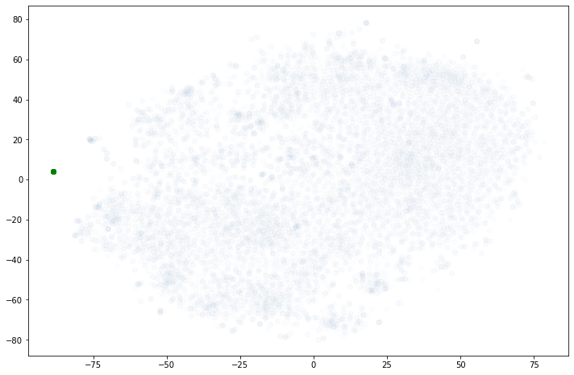

# Clone miniai repository
! git clone https://github.com/fastai/course22p2.git
# Install miniai
! pip install -e course22p2Overview
In this post we are going to train a Matrix Factorization model on MovieLens 20M Dataset.
For the training we are going to use raw PyTorch and miniai.
After the model is trained, we will interpret the results by recommending movies to a given user, analyzing movies’ bias, and visualizing the embeddings by reducing dimensionality using PCA and t-SNE. We will also find similar movies to a given one using cosine similarity.
Hardware
I ran the training on an old GTX 1070 GPU. Maybe a modern CPU is enough to do the job. Or you can run this notebook in Colab. To install miniai in Colab run the next two cells.
# Automatically restart kernel after installs so that your environment can access the new packages
import IPython
app = IPython.Application.instance()
app.kernel.do_shutdown(True)References
- Fastbook: Collaborative Filtering Deep Dive
- Kaggle: Collaborative Filtering Deep Dive
- Wikipedia: Matrix factorization (recommender systems)
- Google Dev: Collaborative Filtering
- Github: Recommenders (Microsoft)
- Kaggle: Visualizing Embeddings With t-SNE
- Building a cost-effective image vector search engine with CLIP
Import libraries
import pandas as pd
import numpy as np
import matplotlib.pyplot as plt
import urllib.request
import zipfile
import pickle
from functools import partial
from pathlib import Path
import torch
import torch.nn as nn
from torch.optim import AdamW, lr_scheduler
from torch.utils.data import (
Dataset, DataLoader, RandomSampler, BatchSampler
)Lets download a script to split the data from gist, based on code from Recommenders (Microsoft) Github repository.
gist_id = 'f6fdb783ab99a37259bec182f864a988'
url = f"https://gist.github.com/{gist_id}.git"
folder = 'recommender_split'
! git clone {url} {folder}
from recommender_split.recommender_split import split_dataframe_by_group, report_splitsCloning into 'recommender_split'...
remote: Enumerating objects: 3, done.
remote: Counting objects: 100% (3/3), done.
remote: Compressing objects: 100% (2/2), done.
remote: Total 3 (delta 0), reused 0 (delta 0), pack-reused 0
Unpacking objects: 100% (3/3), 1.30 KiB | 14.00 KiB/s, done.miniai
We are using miniai framework.
from miniai.datasets import DataLoaders
from miniai.learner import MetricsCB, DeviceCB, ProgressCB, TrainLearner
from miniai.activations import set_seed
from miniai.sgd import BatchSchedCB, RecorderCBLoad Movielens 20M
USER = 'user_id'
ITEM = 'item_id'
TARGET = 'rating'movielens_20M_url = 'https://files.grouplens.org/datasets/movielens/ml-20m.zip'
filename = Path(movielens_20M_url).name
zip_path = Path('.')
extract_path = zip_path / Path(filename).stemif not Path(filename).exists():
with urllib.request.urlopen(movielens_20M_url) as response:
with open(filename, "wb") as f:
f.write(response.read())
if not extract_path.exists():
with zipfile.ZipFile(filename, "r") as zip_ref:
zip_ref.extractall(zip_path)ratings_20m = pd.read_csv(
extract_path/'ratings.csv', header=0,
names=[USER, ITEM, TARGET, 'timestamp'])
ratings_20m = ratings_20m[[USER, ITEM, TARGET]].copy()
movies_20m = pd.read_csv(
extract_path/'movies.csv', encoding='utf-8',
usecols=(0, 1, 2), header=0, names=[ITEM, 'title', 'genres']
)
ratings_20m| user_id | item_id | rating | |
|---|---|---|---|
| 0 | 1 | 2 | 3.5 |
| 1 | 1 | 29 | 3.5 |
| 2 | 1 | 32 | 3.5 |
| 3 | 1 | 47 | 3.5 |
| 4 | 1 | 50 | 3.5 |
| ... | ... | ... | ... |
| 20000258 | 138493 | 68954 | 4.5 |
| 20000259 | 138493 | 69526 | 4.5 |
| 20000260 | 138493 | 69644 | 3.0 |
| 20000261 | 138493 | 70286 | 5.0 |
| 20000262 | 138493 | 71619 | 2.5 |
20000263 rows × 3 columns
EDA
Records with more than one item_id per title
g = movies_20m.groupby('title')['item_id'].count().reset_index()
titles = g[g.item_id>1]movies_20m[movies_20m.title.isin(titles.title)].sort_values('title').head(6)| item_id | title | genres | |
|---|---|---|---|
| 24064 | 114130 | 20,000 Leagues Under the Sea (1997) | Romance|Sci-Fi |
| 20923 | 102190 | 20,000 Leagues Under the Sea (1997) | Adventure|Romance|Sci-Fi |
| 582 | 588 | Aladdin (1992) | Adventure|Animation|Children|Comedy|Musical |
| 24092 | 114240 | Aladdin (1992) | Adventure|Animation|Children|Comedy|Fantasy |
| 24437 | 115777 | Beneath (2013) | Horror |
| 21429 | 104035 | Beneath (2013) | Horror |
- By inspecting movies with the link
https://movielens.org/movies/<item_id>, we can conclude that each title corresponds to an unique movie, even though they share the same title and release year. - Some titles in the dataset refer to the original title, for example item_id=67459 is “Chaos (2005)” and not “The Deadly Hostage (2005)”.
Merge dataframes
ratings_20m = ratings_20m.merge(movies_20m, how='left')
ratings_20m| user_id | item_id | rating | title | genres | |
|---|---|---|---|---|---|
| 0 | 1 | 2 | 3.5 | Jumanji (1995) | Adventure|Children|Fantasy |
| 1 | 1 | 29 | 3.5 | City of Lost Children, The (Cité des enfants p... | Adventure|Drama|Fantasy|Mystery|Sci-Fi |
| 2 | 1 | 32 | 3.5 | Twelve Monkeys (a.k.a. 12 Monkeys) (1995) | Mystery|Sci-Fi|Thriller |
| 3 | 1 | 47 | 3.5 | Seven (a.k.a. Se7en) (1995) | Mystery|Thriller |
| 4 | 1 | 50 | 3.5 | Usual Suspects, The (1995) | Crime|Mystery|Thriller |
| ... | ... | ... | ... | ... | ... |
| 20000258 | 138493 | 68954 | 4.5 | Up (2009) | Adventure|Animation|Children|Drama |
| 20000259 | 138493 | 69526 | 4.5 | Transformers: Revenge of the Fallen (2009) | Action|Adventure|Sci-Fi|IMAX |
| 20000260 | 138493 | 69644 | 3.0 | Ice Age: Dawn of the Dinosaurs (2009) | Action|Adventure|Animation|Children|Comedy|Rom... |
| 20000261 | 138493 | 70286 | 5.0 | District 9 (2009) | Mystery|Sci-Fi|Thriller |
| 20000262 | 138493 | 71619 | 2.5 | Coco Before Chanel (Coco avant Chanel) (2009) | Drama |
20000263 rows × 5 columns
assert not any(ratings_20m.title.isna())data = ratings_20mTrain and Valid Splits
This function splits the dataframe. If filter_by is item it assures that all items specified in the columns col_item are going to be present in both train and valid, except for those with only one row (review).
splits = split_dataframe_by_group(
data, ratio=0.8, filter_by="item",
seed=42, col_user=USER, col_item=ITEM
)train_df = data.iloc[splits[0]]
valid_df = data.iloc[splits[1]]report_splits(data, splits, USER, ITEM, ITEM)Number of item_id with one review: 3972
Number of users in train: 138493
Number of items in train: 26744
Number of users in valid: 138333
Number of items in valid: 22772All items with more than one review are present in valid_df: 26,744 = 22,772 + 3,972.
But there are users that are not present:
users_not_in_valid = set(train_df[USER]) - set(valid_df[USER])
print(f"There are {len(users_not_in_valid)} users not present in valid split")There are 160 users not present in valid splitModify splits to have all users in valid
We can now take the ratings dataframe with only the users not present in valid, and split it using user in the filter_by parameter. That way we assure that that set of users are going to be present both in train and valid.
Using the sort_column parameter means that the item with more reviews are the ones that goes to valid, so it is less likely to remove movies from training.
sort_column = 'numrev_by_item'
number_of_reviews_by_item = data.groupby(ITEM)[ITEM].transform('count')
tmp_filter = data[USER].isin(users_not_in_valid)
df_new_splits = data[tmp_filter].copy()
df_new_splits[sort_column] = number_of_reviews_by_item[tmp_filter]
df_new_splits.head()| user_id | item_id | rating | title | genres | numrev_by_item | |
|---|---|---|---|---|---|---|
| 92313 | 641 | 107 | 2.5 | Muppet Treasure Island (1996) | Adventure|Children|Comedy|Musical | 6376 |
| 92314 | 641 | 135 | 4.0 | Down Periscope (1996) | Comedy | 6305 |
| 92315 | 641 | 405 | 3.5 | Highlander III: The Sorcerer (a.k.a. Highlande... | Action|Fantasy | 3554 |
| 92316 | 641 | 542 | 5.0 | Son in Law (1993) | Comedy|Drama|Romance | 3491 |
| 92317 | 641 | 765 | 4.0 | Jack (1996) | Comedy|Drama | 4812 |
new_splits = split_dataframe_by_group(
df_new_splits, ratio=0.8, filter_by="user",
seed=104577657, col_user=USER, col_item=ITEM, sort_column=sort_column
)Add the indices from both splits:
final_splits = [splits[0] + new_splits[0], splits[1] + new_splits[1]]train_df = data.iloc[final_splits[0]]
valid_df = data.iloc[final_splits[1]]len(train_df), len(valid_df)(15994636, 4009300)f"{len(train_df)/len(data):.2f}", f"{len(valid_df)/len(data):.2f}"('0.80', '0.20')report_splits(data, final_splits, USER, ITEM, ITEM)Number of item_id with one review: 3972
Number of users in train: 138493
Number of items in train: 26744
Number of users in valid: 138493
Number of items in valid: 22772Now we have all items in train and valid except those with only one review, and all users in train and valid.
PyTorch Dataset
First lets create the dictionaries to do the mapping between users, items and indices:
users = sorted(list(data[USER].unique()))
items = sorted(list(data[ITEM].unique()))
# user index to user_id
uidx2u = {k:v for k,v in enumerate(users)}
# user_id to user index
u2uidx = {k:v for v,k in uidx2u.items()}
# item index to item_id
iidx2i = {k:v for k,v in enumerate(items)}
# item_id to item index
i2iidx = {k:v for v,k in iidx2i.items()}
# item index to title
def iidx2title(iidx):
return movies_20m[movies_20m.item_id==iidx2i[iidx]].title.item()len(uidx2u), len(iidx2i)(138493, 26744)# item_id==3351
iidx2title(i2iidx[3351]), i2iidx[3351]('Two Thousand Maniacs! (1964)', 3264)# item index 31 and 150
iidx2title(31), iidx2title(150)('Twelve Monkeys (a.k.a. 12 Monkeys) (1995)', 'Addiction, The (1995)')Optimized Dataset
This Dataset has some peculiarities:
- The mapping of users and titles and the conversion to numpy is done for the full dataframe when the object is created. Another way would be to map and convert partially in the
get_batchfunction. This last approach would benefit with the number of worker the dataloaders use. The one we are using here doesn’t, as we will see. but anyway it is faster. - The Dataset receives a list of indices instead of an individual index, and therefore directly returns a batch.
class CollabDatasetOpt(Dataset):
def __init__(self, df:pd.DataFrame, user_col='user', item_col='item', target='rating'):
self.users = df[user_col].map(u2uidx).to_numpy()
self.items = df[item_col].map(i2iidx).to_numpy()
self.target = df[target].to_numpy()
def __len__(self):
return len(self.users)
def get_batch(self, batch_idxs):
users_b = self.users[batch_idxs]
items_b = self.items[batch_idxs]
x_b = np.column_stack((users_b, items_b))
target_b = self.target[batch_idxs]
y_b = torch.tensor(target_b, dtype=torch.float)
return torch.tensor(x_b), y_b
def __getitem__(self, batch_idxs):
return self.get_batch(batch_idxs)t_dataset = CollabDatasetOpt(train_df, user_col=USER, item_col=ITEM)
v_dataset = CollabDatasetOpt(valid_df, user_col=USER, item_col=ITEM)PyTorch Dataloader
Batch Sampler
Since the dataset receives a batch of indices, lets create a BatchSampler first.
bs = 64 * 50
t_sampler = BatchSampler(
RandomSampler(t_dataset),
batch_size=bs, drop_last=False)
v_sampler = BatchSampler(
RandomSampler(v_dataset),
batch_size=bs*2, drop_last=False)f"Number of batches: {len(t_sampler):,}"'Number of batches: 4,999'How much it takes to loop the train dataset:
%%time
for _ in t_sampler:
t_dataset[_]CPU times: user 21.3 s, sys: 967 ms, total: 22.3 s
Wall time: 20.2 sDataLoader
Lets test some values for num_workers:
t_dataloader = DataLoader(t_dataset, sampler=t_sampler, batch_size=None, num_workers=4)
v_dataloader = DataLoader(v_dataset, sampler=v_sampler, batch_size=None, num_workers=4)%%time
for _ in t_dataloader: passCPU times: user 22.1 s, sys: 8.67 s, total: 30.8 s
Wall time: 29 st_dataloader = DataLoader(t_dataset, sampler=t_sampler, batch_size=None, num_workers=2)
v_dataloader = DataLoader(v_dataset, sampler=v_sampler, batch_size=None, num_workers=2)%%time
for _ in t_dataloader: passCPU times: user 21.3 s, sys: 8.21 s, total: 29.6 s
Wall time: 28.8 st_dataloader = DataLoader(t_dataset, sampler=t_sampler, batch_size=None, num_workers=0)
v_dataloader = DataLoader(v_dataset, sampler=v_sampler, batch_size=None, num_workers=0)%%time
for _ in t_dataloader: passCPU times: user 20.5 s, sys: 934 ms, total: 21.5 s
Wall time: 19.3 sminiai DataLoaders
dls = DataLoaders(t_dataloader, v_dataloader)dt = dls.train
xb, yb = next(iter(dt))Lets see how does a batch looks like:
xb[:5,:], yb[:5](tensor([[ 13804, 1276],
[111577, 436],
[ 75077, 206],
[ 38963, 481],
[ 51319, 1884]]),
tensor([5., 4., 3., 3., 5.]))Number of users and items in the dataset:
n_users = len(data[USER].unique())
n_items = len(data[ITEM].unique())
n_users, n_items(138493, 26744)Model
Lets create a DotProdcutBias model with the Embedding’s weights initialized as done in fastai.
# functions from fastai repository
def sigmoid_range(x, low, high):
"Sigmoid function with range `(low, high)`"
return torch.sigmoid(x) * (high - low) + low
def trunc_normal_(x, mean=0., std=1.):
"Truncated normal initialization (approximation)"
# From https://discuss.pytorch.org/t/implementing-truncated-normal-initializer/4778/12
return x.normal_().fmod_(2).mul_(std).add_(mean)
class Embedding(nn.Embedding):
"Embedding layer with truncated normal initialization"
def __init__(self, ni, nf, std=0.01):
super().__init__(ni, nf)
trunc_normal_(self.weight.data, std=std)class DotProductBias(nn.Module):
def __init__(self, n_users, n_movies, n_factors, y_range=(0, 5.5)):
super().__init__()
self.user_factors = Embedding(n_users, n_factors)
self.user_bias = Embedding(n_users, 1)
self.movie_factors = Embedding(n_movies, n_factors)
self.movie_bias = Embedding(n_movies, 1)
self.y_range = y_range
def forward(self, x):
users = self.user_factors(x[:,0])
movies = self.movie_factors(x[:,1])
res = (users * movies).sum(dim=1, keepdim=True)
res += self.user_bias(x[:,0]) + self.movie_bias(x[:,1])
return sigmoid_range(res, *self.y_range).flatten()Training with miniai
Hyperparameters Set # 1
After playing with some hyperparameters, best results were achieved with n_factors equals 100.
model = DotProductBias(n_users, n_items, n_factors=100)set_seed(42)
lr, epochs = 5e-3, 5
tmax = epochs * len(dls.train)sched = partial(lr_scheduler.OneCycleLR, max_lr=lr, total_steps=tmax)
metrics = MetricsCB()
cbs = [DeviceCB(), metrics, ProgressCB(plot=False), BatchSchedCB(sched)]
loss_f = nn.MSELoss()learn = TrainLearner(
model, dls, loss_f, lr=lr, cbs=cbs,
opt_func=partial(AdamW, weight_decay=0.15)
)learn.fit(epochs)| loss | epoch | train |
|---|---|---|
| 0.908 | 0 | train |
| 0.706 | 0 | eval |
| 0.692 | 1 | train |
| 0.691 | 1 | eval |
| 0.656 | 2 | train |
| 0.654 | 2 | eval |
| 0.586 | 3 | train |
| 0.603 | 3 | eval |
| 0.471 | 4 | train |
| 0.591 | 4 | eval |
Hyperparameters Set # 2
Similar results were achieved by increasing the batch size and with n_factor equals 60.
bs = 64 * 200
t_sampler = BatchSampler(
RandomSampler(t_dataset),
batch_size=bs, drop_last=False)
v_sampler = BatchSampler(
RandomSampler(v_dataset),
batch_size=bs*2, drop_last=False)f"Number of batches: {len(t_sampler):,}"'Number of batches: 1,250't_dataloader = DataLoader(t_dataset, sampler=t_sampler, batch_size=None)
v_dataloader = DataLoader(v_dataset, sampler=v_sampler, batch_size=None)
dls = DataLoaders(t_dataloader, v_dataloader)model = DotProductBias(n_users, n_items, n_factors=60)set_seed(42)
lr, epochs = 5e-3, 5
tmax = epochs * len(dls.train)sched = partial(lr_scheduler.OneCycleLR, max_lr=lr, total_steps=tmax)
metrics = MetricsCB()
cbs = [DeviceCB(), metrics, ProgressCB(plot=False), BatchSchedCB(sched)]
loss_f = nn.MSELoss()learn = TrainLearner(
model, dls, loss_f, lr=lr, cbs=cbs,
opt_func=partial(AdamW, weight_decay=0.15)
)learn.fit(epochs)| loss | epoch | train |
|---|---|---|
| 1.027 | 0 | train |
| 0.705 | 0 | eval |
| 0.655 | 1 | train |
| 0.634 | 1 | eval |
| 0.564 | 2 | train |
| 0.604 | 2 | eval |
| 0.472 | 3 | train |
| 0.593 | 3 | eval |
| 0.399 | 4 | train |
| 0.594 | 4 | eval |
Recommend movies to users
We now have a model that can predict user ratings of a movie because it learned latent factors (implicit features) about all users and movies in the dataset. Let’s take, for example, the user user_id=1 and create an input array of the user index and all possible movie indices.
user_id = 1
all_movies_idx = np.arange(0, n_items)
user_array = np.full((n_items, 2), u2uidx[user_id])
user_array[:, 1] = all_movies_idx
user_arrayarray([[ 0, 0],
[ 0, 1],
[ 0, 2],
...,
[ 0, 26741],
[ 0, 26742],
[ 0, 26743]])Or better yet, lets define a function to recommend to any user we want:
device=torch.device("cuda:0")
#device=torch.device("cpu")
def recommend(user_id=1, n_items=100, k=10, device=device, df=ratings_20m):
"""Recommend movies the user haven't rated
"""
all_movies_idx = np.arange(0, n_items)
user_array = np.full((n_items, 2), u2uidx[user_id])
user_array[:, 1] = all_movies_idx
i = 0
with torch.no_grad():
preds = learn.model(torch.tensor(user_array).to(device))
top_indices = preds.argsort(descending=True)
# movies that user already rated
items_rated_by_user = df[df.user_id==user_id].item_id.values
print(f'User with id={user_id} would likely like:')
print(f'{"Rating"} - {"Movie"}')
for iidx in top_indices:
# print titles the user haven't rated
if iidx2i[iidx.item()] not in items_rated_by_user:
print(f'{preds[iidx]:>6.2f} - {iidx2title(iidx.item())}')
i += 1
if i >= k: breakrecommend(user_id=1, n_items=n_items)User with id=1 would likely like:
Rating - Movie
4.26 - Hobbit: An Unexpected Journey, The (2012)
4.22 - Star Wars: Episode VI - Return of the Jedi (1983)
4.21 - X-Men (2000)
4.18 - Dark Knight, The (2008)
4.18 - Spider-Man (2002)
4.17 - Star Trek (2009)
4.17 - Indiana Jones and the Temple of Doom (1984)
4.13 - Hobbit: The Desolation of Smaug, The (2013)
4.12 - Avengers, The (2012)
4.12 - Gladiator (2000)And user with id 50:
recommend(user_id=50, n_items=n_items)User with id=50 would likely like:
Rating - Movie
4.69 - Princess Bride, The (1987)
4.68 - Three Colors: Red (Trois couleurs: Rouge) (1994)
4.65 - Big Lebowski, The (1998)
4.57 - Breakfast Club, The (1985)
4.56 - Cosmos (1980)
4.56 - My Neighbor Totoro (Tonari no Totoro) (1988)
4.55 - Royal Tenenbaums, The (2001)
4.55 - Inglourious Basterds (2009)
4.54 - Star Wars: Episode V - The Empire Strikes Back (1980)
4.53 - Three Colors: Blue (Trois couleurs: Bleu) (1993)Interpreting Results
For a comprehensive discussion about interpreting Embeddings (Factors) and Bias please refer to Kaggle: Collaborative Filtering Deep Dive.
Bias
Movies with the lowest values:
movie_bias = learn.model.movie_bias.weight.squeeze()
idxs = movie_bias.argsort()[:5]
[iidx2title(i.item()) for i in idxs]['SuperBabies: Baby Geniuses 2 (2004)',
'From Justin to Kelly (2003)',
'Glitter (2001)',
"Barney's Great Adventure (1998)",
'Gigli (2003)']Movies with the highest bias:
idxs = movie_bias.argsort(descending=True)[:5]
[iidx2title(i.item()) for i in idxs]['Shawshank Redemption, The (1994)',
"Schindler's List (1993)",
'Usual Suspects, The (1995)',
'Godfather, The (1972)',
'Raiders of the Lost Ark (Indiana Jones and the Raiders of the Lost Ark) (1981)']The higher the bias of the movie means that even people that is not a good match for those movies like ‘The Usual Suspects’ or ‘The Godfather’, tends to give them a good rating.
Embeddings
Popular Movies
Lets define popular movies as movies with more than 100 ratings.
n_ratings = ratings_20m.groupby('item_id')['rating'].count()
pop_movies_df = movies_20m.merge(
n_ratings, left_on='item_id', right_index=True)
pop_movies_df.columns = ['item_id', 'title', 'genres', 'n_ratings']
pop_movies_df = pop_movies_df[pop_movies_df.n_ratings >= 100]
pop_movies_df = pop_movies_df.sort_values(
by=['n_ratings', 'item_id'], ascending=(False, True))
pop_movies_df| item_id | title | genres | n_ratings | |
|---|---|---|---|---|
| 293 | 296 | Pulp Fiction (1994) | Comedy|Crime|Drama|Thriller | 67310 |
| 352 | 356 | Forrest Gump (1994) | Comedy|Drama|Romance|War | 66172 |
| 315 | 318 | Shawshank Redemption, The (1994) | Crime|Drama | 63366 |
| 587 | 593 | Silence of the Lambs, The (1991) | Crime|Horror|Thriller | 63299 |
| 476 | 480 | Jurassic Park (1993) | Action|Adventure|Sci-Fi|Thriller | 59715 |
| ... | ... | ... | ... | ... |
| 12271 | 56336 | Wrong Turn 2: Dead End (2007) | Action|Horror|Thriller | 100 |
| 12722 | 59915 | Stuck (2007) | Horror|Thriller | 100 |
| 14350 | 71878 | Stepfather, The (2009) | Horror|Thriller | 100 |
| 15860 | 80469 | Superman/Batman: Apocalypse (2010) | Animation | 100 |
| 23754 | 112911 | Hercules (2014) | Action|Adventure | 100 |
8546 rows × 4 columns
pop_movies_id = pop_movies_df.item_id
# item_id to dataloader's item index
pop_movies_idx = np.array([i2iidx[id] for id in pop_movies_id])
# item index to titles
pop_movies_title = np.array([iidx2title(idx.item()) for idx in pop_movies_idx])Popular movies embeddings
pop_movies_emb = learn.model.movie_factors.weight[pop_movies_idx].cpu().detach()
pop_movies_emb.shapetorch.Size([8546, 60])The embeddings are a vector of size 60.
pop_movies_emb[0]tensor([-0.2493, 0.3020, 0.9561, 0.5596, 0.7226, 0.3335, -0.3435, 0.0695,
0.4565, -0.3386, -0.4577, -1.2690, -0.1703, -0.4787, -0.4197, 0.8845,
-0.5262, -0.3538, 0.4294, 0.6587, 0.0867, 0.2583, 0.2544, -0.8050,
0.4216, -0.8228, 0.5268, 0.6913, 0.3080, -1.0402, 0.2570, 0.3762,
0.0897, -0.7355, 0.6587, -0.2353, -1.2990, -0.7492, 1.0346, 0.5964,
0.7656, -0.0978, 0.3987, 0.4051, -0.1287, 0.6400, -0.6192, 1.2921,
-0.5318, 0.6024, -0.7220, -0.5899, -0.7019, 0.5004, -0.2944, -0.5028,
-0.2923, -0.0144, -0.4991, 0.2179])all(pop_movies_title==pop_movies_df.title.values)TrueVisualizing the embeddings
Dimensionality reduction: PCA
# from fastai library
def pca(x:torch.tensor, k=2):
"Compute PCA of `x` with `k` dimensions."
x = x-torch.mean(x,0)
U,S,V = torch.svd(x.t())
return torch.mm(x,U[:,:k])movie_pca = pca(pop_movies_emb, 3)
fac0, fac1, fac2 = movie_pca.t()
idxs = list(range(30))
X_pca = fac0
Y_pca = fac2pop_movies_df['x_pca'] = X_pca
pop_movies_df['y_pca'] = Y_pcaDimensionality reduction: t-SNE
Kaggle: Visualizing Embeddings With t-SNE
from sklearn.manifold import TSNE
tsne = TSNE(random_state=1, n_iter=1_500, metric="cosine")
movie_tsne = tsne.fit_transform(
pop_movies_emb
)/home/fmussari/mambaforge/envs/fastaiv3/lib/python3.9/site-packages/sklearn/manifold/_t_sne.py:780: FutureWarning: The default initialization in TSNE will change from 'random' to 'pca' in 1.2.
warnings.warn(
/home/fmussari/mambaforge/envs/fastaiv3/lib/python3.9/site-packages/sklearn/manifold/_t_sne.py:790: FutureWarning: The default learning rate in TSNE will change from 200.0 to 'auto' in 1.2.
warnings.warn(
/home/fmussari/mambaforge/envs/fastaiv3/lib/python3.9/site-packages/sklearn/manifold/_t_sne.py:819: FutureWarning: 'square_distances' has been introduced in 0.24 to help phase out legacy squaring behavior. The 'legacy' setting will be removed in 1.1 (renaming of 0.26), and the default setting will be changed to True. In 1.3, 'square_distances' will be removed altogether, and distances will be squared by default. Set 'square_distances'=True to silence this warning.
warnings.warn(pop_movies_df['x'] = movie_tsne[:, 0]
pop_movies_df['y'] = movie_tsne[:, 1]Helper functions
These functions are a simplification of those in the aforementioned Kaggle notebook.
def plot_bg(df, x='x', y='y', bg_alpha=.01, figsize=(12, 8)):
"""Create and return a plot of all movie embeddings with very low opacity.
"""
fig, ax = plt.subplots(figsize=figsize)
ax.scatter(df[x], df[y], alpha=bg_alpha)
return ax
def plot_by_title_pattern(df, pattern, x='x', y='y'):
"""Plot all movies whose titles match the given regex pattern.
"""
match = df[df.title.str.contains(pattern)]
return plot_with_annotations(df, match.index, x=x, y=y)
def plot_list_of_values(df, list_of_values, column='item_id'):
"""Plot all movies whose "column" values are in list_of_values.
"""
match = df[df[column].isin(list_of_values)]
return plot_with_annotations(df, match.index)
def plot_with_annotations(df, label_indices, x='x', y='y'):
"""Create a plot of all movie embeddings with very low opacity and
highlight values whose indices are in in label_indices.
"""
ax = plot_bg(df, x=x, y=y)
print(f'Highlighting {len(label_indices)} items')
Xlabeled = df[x].loc[label_indices]
Ylabeled = df[y].loc[label_indices]
ax.scatter(Xlabeled, Ylabeled, alpha=0.5, color='green')
return ax
def plot_region_around(df, title, margin=5, figsize=(10, 6)):
"""Plot the region of the mapping space bounded by the given x and y limits.
"""
xmargin = ymargin = margin
match = df[df.title == title]
assert len(match) == 1
row = match.iloc[0]
return plot_region(
df, row.x-xmargin, row.x+xmargin, row.y-ymargin, row.y+ymargin)
def plot_region(df, x0, x1, y0, y1, text=True, figsize=(10, 6)):
"""Plot the region of the mapping space bounded by the given x and y limits.
"""
fig, ax = plt.subplots(figsize=figsize)
limits = (
(df.x >= x0) & (df.x <= x1) & (df.y >= y0) & (df.y <= y1))
pts = df[limits]
print(f"Showing {sum(limits)} items")
ax.scatter(pts.x, pts.y, alpha=.6)
ax.set_xlim(x0, x1)
ax.set_ylim(y0, y1)
if text:
texts = []
for label, x, y in zip(pts.title.values, pts.x.values, pts.y.values):
t = ax.annotate(label, xy=(x, y))
texts.append(t)
return axPCA
plot_bg(df=pop_movies_df, x='x_pca', y='y_pca', bg_alpha=.05);t-SNE
plot_bg(df=pop_movies_df, x='x', y='y', bg_alpha=.05);Highlight movies
Remember that the model only had user_id, item_id and ratings as features. All relations and patterns that we are going to see from now on were learned as latent factor only from the interaction between users and movies. With no data about movies or users themselves.
Harry Potter
plot_by_title_pattern(pop_movies_df, 'Harry Potter');Highlighting 8 items
The 8 Harry Potter movies are so close that are almost indistinguishable in the plot.
pop_movies_df[pop_movies_df.title.str.contains('Harry Potter')][['item_id', 'title', 'x', 'y']]| item_id | title | x | y | |
|---|---|---|---|---|
| 4800 | 4896 | Harry Potter and the Sorcerer's Stone (a.k.a. ... | -88.674049 | 4.128831 |
| 5717 | 5816 | Harry Potter and the Chamber of Secrets (2002) | -88.672592 | 4.128721 |
| 7769 | 8368 | Harry Potter and the Prisoner of Azkaban (2004) | -88.670090 | 4.129076 |
| 10600 | 40815 | Harry Potter and the Goblet of Fire (2005) | -88.668808 | 4.128649 |
| 11974 | 54001 | Harry Potter and the Order of the Phoenix (2007) | -88.666321 | 4.128205 |
| 13935 | 69844 | Harry Potter and the Half-Blood Prince (2009) | -88.664932 | 4.127958 |
| 17499 | 88125 | Harry Potter and the Deathly Hallows: Part 2 (... | -88.660225 | 4.126957 |
| 16191 | 81834 | Harry Potter and the Deathly Hallows: Part 1 (... | -88.659821 | 4.126904 |
plot_region_around(
pop_movies_df, 'Harry Potter and the Order of the Phoenix (2007)', margin=0.008);Showing 8 itemsBy looking at the axis scale, we can see that they are very, very close. Impressive.
Star Wars
pop_movies_df[pop_movies_df.title.str.contains('Star Wars')]| item_id | title | genres | n_ratings | x_pca | y_pca | x | y | |
|---|---|---|---|---|---|---|---|---|
| 257 | 260 | Star Wars: Episode IV - A New Hope (1977) | Action|Adventure|Sci-Fi | 54502 | -0.246074 | -0.417709 | -70.578560 | 13.257028 |
| 1184 | 1210 | Star Wars: Episode VI - Return of the Jedi (1983) | Action|Adventure|Sci-Fi | 46839 | 0.144319 | -0.921739 | -70.577507 | 13.240388 |
| 1171 | 1196 | Star Wars: Episode V - The Empire Strikes Back... | Action|Adventure|Sci-Fi | 45313 | -0.387326 | -0.676300 | -70.583687 | 13.270293 |
| 2543 | 2628 | Star Wars: Episode I - The Phantom Menace (1999) | Action|Adventure|Sci-Fi | 29574 | 0.924800 | -0.526612 | -70.411499 | 10.423186 |
| 5281 | 5378 | Star Wars: Episode II - Attack of the Clones (... | Action|Adventure|Sci-Fi|IMAX | 16425 | 0.776779 | -0.675660 | -70.408615 | 10.422228 |
| 10117 | 33493 | Star Wars: Episode III - Revenge of the Sith (... | Action|Adventure|Sci-Fi | 12303 | 0.525108 | -0.795317 | -70.412682 | 10.452327 |
| 12926 | 61160 | Star Wars: The Clone Wars (2008) | Action|Adventure|Animation|Sci-Fi | 843 | 0.652965 | -0.284741 | -70.394539 | 10.364397 |
plot_by_title_pattern(pop_movies_df, 'Star Wars');Highlighting 7 itemsplot_region_around(
pop_movies_df, 'Star Wars: Episode I - The Phantom Menace (1999)', margin=0.06);Showing 4 itemsplot_region_around(
pop_movies_df, 'Star Wars: Episode IV - A New Hope (1977)', margin=0.06);Showing 3 itemsThat’s impressive, isn’t it? There are two clusters that at the same time are close. One cluster is for the ones released in the 1980s (original trilogy), and the other for the ones released after 1999. It is as if the years were a model’s feature.
Godfather
pop_movies_df[pop_movies_df.title.str.contains('Godfather')]| item_id | title | genres | n_ratings | x_pca | y_pca | x | y | |
|---|---|---|---|---|---|---|---|---|
| 843 | 858 | Godfather, The (1972) | Crime|Drama | 41355 | -1.144734 | -0.149714 | -0.402252 | 66.513908 |
| 1195 | 1221 | Godfather: Part II, The (1974) | Crime|Drama | 27398 | -1.063627 | -0.211216 | -0.408337 | 66.517693 |
| 1939 | 2023 | Godfather: Part III, The (1990) | Crime|Drama|Mystery|Thriller | 10141 | 0.094486 | -0.535812 | 71.090759 | 54.931854 |
| 7924 | 8607 | Tokyo Godfathers (2003) | Adventure|Animation|Drama | 705 | -0.615767 | -0.214817 | 43.958630 | 21.984804 |
list_of_item_ids = [858, 1221, 2023]plot_list_of_values(pop_movies_df, list_of_item_ids, column='item_id');Highlighting 3 itemsplot_region_around(pop_movies_df, 'Godfather, The (1972)', margin=0.1);Showing 2 itemsThe two of them released in the 1970s were very close.
Toy Story
pop_movies_df[pop_movies_df.title.str.contains('Toy Story')]| item_id | title | genres | n_ratings | x_pca | y_pca | x | y | |
|---|---|---|---|---|---|---|---|---|
| 0 | 1 | Toy Story (1995) | Adventure|Animation|Children|Comedy|Fantasy | 49695 | -0.146245 | 0.237802 | 24.761007 | -54.195663 |
| 3027 | 3114 | Toy Story 2 (1999) | Adventure|Animation|Children|Comedy|Fantasy | 22770 | -0.209496 | 0.377863 | 24.759005 | -54.147175 |
| 15401 | 78499 | Toy Story 3 (2010) | Adventure|Animation|Children|Comedy|Fantasy|IMAX | 5781 | -0.242506 | -0.096230 | 24.653181 | -53.001858 |
plot_by_title_pattern(pop_movies_df, 'Toy Story');Highlighting 3 itemsplot_region_around(pop_movies_df, 'Toy Story 3 (2010)', margin=1.25);Showing 9 itemsThe two of them released in the 1990s are very close. The one released in 2010 is also near. And in the surroundings we can see more Pixar movies. The model clustered almost perfectly Pixar movies that won the Oscars.
Highlight genres
Documentary
docs = pop_movies_df[(pop_movies_df.genres == 'Documentary')]
plot_with_annotations(pop_movies_df, docs.index);Highlighting 242 itemsHorror
docs = pop_movies_df[(pop_movies_df.genres == 'Horror')]
plot_with_annotations(pop_movies_df, docs.index);Highlighting 156 itemsThere is definitely some clustering happening.
Find similar movies
The blog post Building a cost-effective image vector search engine with CLIP teaches us, among other things, how to calculate cosine similarity and find the nearest vector from a given one. This allows us to find movies that are similar to a given movie according to the embeddings our model has learned.
Lets first define some functions.
def normalize(a): return a / a.norm(dim=-1, keepdim=True)
def cosine_sim(a, b): return normalize(a) @ normalize(b).T
def search(embs, query_embs):
sims = cosine_sim(embs, query_embs).flatten()
indices = sims.argsort(descending=True)
return indices, sims[indices]
def most_similar_by_idx(items_emb, idx, k=10):
indices, sim = search(items_emb, items_emb[idx])
print(f'Movies similar to:\n"{pop_movies_title[idx]}"')
print(' sim - movie')
for i, idx in enumerate(indices[1:k+1]):
print(f"{sim[i]:.3f} - {pop_movies_title[idx]}")
def most_similar_by_title(items_emb, title, k=10):
idx = np.where(pop_movies_title==title)[0][0]
return most_similar_by_idx(items_emb, idx, k=10)
def display_indices(word):
print(f'{"index":<5}, titles')
for idx, title in enumerate(pop_movies_title):
if word in title:
print(f'{idx:>5}, {title}')title = "Harry Potter and the Sorcerer's Stone (a.k.a. Harry Potter and the Philosopher's Stone) (2001)"
most_similar_by_title(pop_movies_emb, title=title)Movies similar to:
"Harry Potter and the Sorcerer's Stone (a.k.a. Harry Potter and the Philosopher's Stone) (2001)"
sim - movie
1.000 - Harry Potter and the Chamber of Secrets (2002)
0.991 - Harry Potter and the Goblet of Fire (2005)
0.956 - Harry Potter and the Prisoner of Azkaban (2004)
0.955 - Harry Potter and the Order of the Phoenix (2007)
0.925 - Harry Potter and the Half-Blood Prince (2009)
0.907 - Harry Potter and the Deathly Hallows: Part 2 (2011)
0.881 - Harry Potter and the Deathly Hallows: Part 1 (2010)
0.862 - Hunger Games: Catching Fire, The (2013)
0.561 - Chronicles of Narnia: The Lion, the Witch and the Wardrobe, The (2005)
0.544 - Chronicles of Narnia: Prince Caspian, The (2008)As we saw with t-SNE, the Harry Potter films are very closely related to each other.
Lets try with some less popular like Half Nelson.
most_similar_by_title(pop_movies_emb, title='Half Nelson (2006)')Movies similar to:
"Half Nelson (2006)"
sim - movie
1.000 - Rachel Getting Married (2008)
0.786 - Requiem (2006)
0.764 - Hollow Reed (1996)
0.750 - Blue Is the Warmest Color (La vie d'Adèle) (2013)
0.749 - And Your Mother Too (Y tu mamá también) (2001)
0.748 - Squid and the Whale, The (2005)
0.743 - Upstream Color (2013)
0.739 - Calvary (2014)
0.737 - Animal Kingdom (2010)
0.735 - Three Burials of Melquiades Estrada, The (2006)most_similar_by_title(pop_movies_emb, title='Blue Velvet (1986)')Movies similar to:
"Blue Velvet (1986)"
sim - movie
1.000 - Lolita (1962)
0.724 - Eraserhead (1977)
0.723 - Wild at Heart (1990)
0.711 - Mulholland Drive (2001)
0.709 - Tin Drum, The (Blechtrommel, Die) (1979)
0.704 - Aguirre: The Wrath of God (Aguirre, der Zorn Gottes) (1972)
0.698 - Videodrome (1983)
0.697 - Barton Fink (1991)
0.688 - Man Who Fell to Earth, The (1976)
0.688 - Naked Lunch (1991)We can see some other Lynch’s movies there and some Kubrick’s.
most_similar_by_title(pop_movies_emb, title="Full Metal Jacket (1987)")Movies similar to:
"Full Metal Jacket (1987)"
sim - movie
1.000 - Apocalypse Now (1979)
0.740 - Platoon (1986)
0.730 - Goodfellas (1990)
0.672 - Clockwork Orange, A (1971)
0.660 - Deer Hunter, The (1978)
0.640 - Scarface (1983)
0.633 - Reservoir Dogs (1992)
0.631 - Once Upon a Time in America (1984)
0.602 - City of God (Cidade de Deus) (2002)
0.601 - Straw Dogs (1971)display_indices('Átame')index, titles
2413, Tie Me Up! Tie Me Down! (¡Átame!) (1990)most_similar_by_title(pop_movies_emb, title="Tie Me Up! Tie Me Down! (¡Átame!) (1990)")Movies similar to:
"Tie Me Up! Tie Me Down! (¡Átame!) (1990)"
sim - movie
1.000 - Live Flesh (Carne trémula) (1997)
0.776 - Women on the Verge of a Nervous Breakdown (Mujeres al borde de un ataque de nervios) (1988)
0.750 - Sex and Lucia (Lucía y el sexo) (2001)
0.748 - All About My Mother (Todo sobre mi madre) (1999)
0.745 - 1900 (Novecento) (1976)
0.737 - High Heels (Tacones lejanos) (1991)
0.727 - Wild Reeds (Les roseaux sauvages) (1994)
0.722 - What Have I Done to Deserve This? (¿Qué he hecho yo para merecer esto!!) (1984)
0.716 - Keep the River on Your Right: A Modern Cannibal Tale (2000)
0.716 - Thieves (Voleurs, Les) (1996)Mostly Almodovar´s there.
Remember that t-SNE placed The Godfather III far away from the other two? Well, as we can see here cosine similarity with the full embeddings place them really close.
most_similar_by_title(pop_movies_emb, title="Godfather: Part III, The (1990)")Movies similar to:
"Godfather: Part III, The (1990)"
sim - movie
1.000 - Godfather: Part II, The (1974)
0.626 - Godfather, The (1972)
0.574 - Once Upon a Time in America (1984)
0.538 - Scent of a Woman (1992)
0.503 - Carlito's Way (1993)
0.500 - Hollywood Ending (2002)
0.482 - Scarface (1983)
0.475 - Best Offer, The (Migliore offerta, La) (2013)
0.474 - Casino Jack (2010)
0.472 - Devil's Advocate, The (1997)Conclusions
It is very impressive how the model can cluster movies without knowing anything explicit about them with such a simple architecture like a DotProductBias model. It learned features that clustered movies by sagas, directors or studios.
For this case t-SNE was very good representing clusters in a reduced dimensionality.